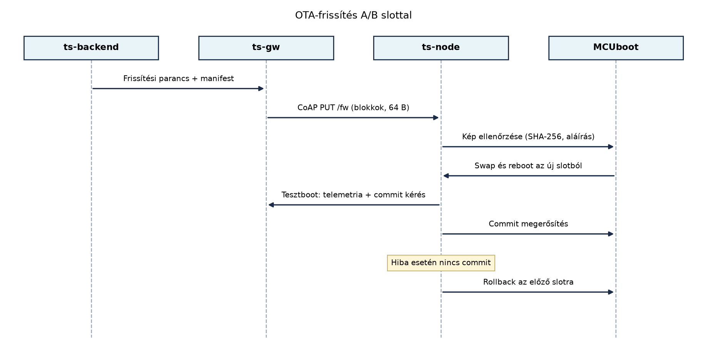

A TerraSense üvegházban a ts-node eszközök folyamatosan
mérik a hőmérsékletet, páratartalmat és talajnedvességet, valamint
öntözőszelepet vezérelnek. Tegyük fel, hogy az öntözésvezérlő
állapotgépében hibát találunk: fagyveszély esetén is nyitva hagyja a
szelepet, ami a növények károsodásához vezethet. A javítás sürgős, de a
200 darab telepített csomópontot fizikailag felkeresni nem lehetséges.
Az OTA-frissítés (Over-The-Air, azaz hálózaton keresztüli frissítés) az
egyetlen járható út. A hibás frissítés azonban még rosszabb: ha az új
kép nem indul, az eszköz „téglává” (brick) válik, és a teljes állomány
elveszítheti a felügyeletet. Ezért olyan mechanizmus kell, amely
áramszünet, félbeszakadt letöltés vagy rossz kép esetén is helyreállítja
a rendszert.
Definíció. - OTA-frissítés (Over-The-Air update): firmware- vagy alkalmazáskép cseréje hálózaton keresztül, fizikai hozzáférés nélkül. - A/B slot: két, logikailag elkülönített flash-terület. Az egyik az aktív (bootoló) kép, a másik fogadja az új verziót. A csere után a bootloader eldönti, melyikből indítson. - Tesztboot (test boot): az új kép első, felügyelt indítása. Az alkalmazásnak egy megerősítési (commit) parancsot kell küldenie, különben a rendszer visszaáll. - Rollback: automatikus visszatérés az előző, ismert jó slotra, ha az új kép nem indul vagy nem kap megerősítést. - Delta-frissítés: csak a két firmware-verzió közötti bináris különbség (delta) letöltése, nem a teljes kép. - Canary kiadás: a frissítés először egy kis, reprezentatív eszközcsoporton történik; a telemetriai adatok alapján döntenek a folytatásról.
A TerraSense eszközoldali frissítési folyamata a CoAP: REST UDP fölött, Observe és blokkátvitel
alfejezetben rögzített konvencióra épül: a frissítő kliens a
coap://ts-node/fw erőforrásra PUT metódussal, 64 bájtos
blokkokban küldi a firmware-t; az eszköz köztes válasza 2.31 Continue,
az utolsó blokkra 2.04 Changed. A teljes kép megérkezése után az eszköz
ellenőrzi az integritást (a Biztonságos boot és
firmware-aláírás alfejezetben bemutatott SHA-256 és
aláírás-ellenőrzés), majd a bootloader elvégzi a slotcserét és az új
képből bootol.
Az alábbi szekvenciadiagram a normál sikeres frissítést és a rollback esetet vázolja:

A frissítési manifest (metaadat) tartalmazza a verziót, a kép
méretét, a SHA-256 lenyomatot, a delta-bázis verzióját és a minimális
akkufeszültséget. A ts-node csak akkor kezdi el a
letöltést, ha az akkufeszültség a küszöb felett van, így elkerülhető a
letöltés közbeni leállás. A gateway (ts-gw) tárolja a
képet, és a CoAP blokkátvitelt a Gateway
üzemeltetése alfejezetben leírt módon felügyeli.
Az OTA-tervezésnél több kompromisszumot kell mérlegelni, ezeket az alábbi táblázat foglalja össze.
| Döntés | Változatok | TerraSense választás | Indoklás |
|---|---|---|---|
| Letöltési protokoll | MQTT, HTTP, CoAP | CoAP blokkátvitel (CoAP: REST UDP fölött, Observe és blokkátvitel) | Kis memóriaigényű, UDP-n is működik, a blokkátvitel félbeszakadás-tűrő |
| Slotok száma | Egy slot, A/B | A/B (MCUboot) | Rollback áramszünet esetén is garantált |
| Képtípus | Teljes, delta | Teljes alapértelmezés, delta opcionális nagy flottánál | A delta csökkenti az átvitelt, de bonyolítja a verziókezelést |
| Megerősítés | Nincs, boot után azonnali, késleltetett commit | Tesztboot + commit 2 perc után | A hibás kép még elkapható a megerősítés előtt |
| Kiadási stratégia | Egyszerre, canary, hullámok | Canary 5%, majd 20%, 50%, 100% | A hibák korai észlelése, a teljes állomány védelme |
A frissítési folyamat állapotai a ts-node oldalán:
| Állapot | Esemény | Következő állapot |
|---|---|---|
| IDLE | Manifest fogadása | DOWNLOADING |
| DOWNLOADING | Minden blokk megérkezett | VERIFYING |
| DOWNLOADING | Hálózati hiba, 3 újrapróbálkozás után | IDLE (hibajelentés) |
| VERIFYING | SHA-256 / aláírás OK | TEST_BOOT |
| VERIFYING | Ellenőrzés sikertelen | IDLE (hibajelentés) |
| TEST_BOOT | Commit parancs sikeres | COMMITTED |
| TEST_BOOT | Időtúllépés (pl. 2 perc) | ROLLBACK |
| COMMITTED | – | IDLE (új verzió aktív) |
| ROLLBACK | Bootloader visszacseréli a slotot | IDLE (régi verzió aktív) |
A ts-gw gateway frissítése eltérő: a Linux-alapú
rendszeren konténer-image-et cserélünk. Az üzemeltetés alfejezetben leírt módon a Compose-ban
a szolgáltatás image tagjét új verzióra állítjuk, a
docker compose pull && up -d parancs futtatásával.
Visszaállítás esetén a korábbi taget állítjuk vissza. Natív rendszeren
szimbolikus linkkel mutathatunk az aktuális rootfs-re, A/B rootfs esetén
a bootloader két partícióból választ. Az IETF SUIT manifest egy
szabványos leíró formátum a frissítési metaadatok és függőségek
leírására; a TerraSense-ben jelenleg saját JSON manifestet használunk,
de a SUIT-ra való áttérés hosszú távú lehetőség.
Példa: a gh1/n001 eszköz frissítése 1.6.2-ről
1.7.0-ra
Az új firmware mérete 96 KiB (98 304 B). A CoAP blokkméret 64 B, az átviteli hatékonyság UDP/6LoWPAN felett átlagosan 80% (illusztratív, nem mért érték). A szükséges blokkok száma:
A hatékony átviteli sebesség a szimulált UDP-kapcsolaton 1,2 kB/s (illusztratív). A letöltési idő:
Ha a delta-frissítés a két verzió között csak 18 KiB, akkor a letöltési idő körülbelül 15 s-ra csökken. Ez a különbség nagy flottánál jelentős: 200 eszköz esetén a teljes átvitel 16,4 MB helyett 3,0 MB, ami a korlátos LPWAN-kapacitást is kíméli.
A frissítés lépései:
A ts-backend a
terrasense/ota/gh1/n001/available topicra közzéteszi a
manifestet:
{
"version": "1.7.0",
"size": 98304,
"sha256": "a1b2c3...",
"delta_base": "1.6.2",
"min_battery_mv": 3400
}A ts-gw a manifestet fogadja, és a CoAP
blokkátvitelt a ts-node felé elindítja.
A ts-node a blokkokat a flash másodlagos slotjába
írja. A folyamat megszakadása esetén a már letöltött blokkok
érvénytelenek, és a folytatás a manifest újbóli lekérésével
indul.
Az utolsó blokk után a ts-node ellenőrzi a SHA-256
lenyomatot és az aláírást. Ha minden érvényes, a bootloader (MCUboot)
elvégzi a swapet, és az eszköz az új képből bootol.
A tesztboot során az alkalmazás a szokásos telemetriát küldi, és 2 percen belül commit parancsot ad a bootloadernek. Ha a commit nem érkezik meg, a bootloader visszacseréli a slotokat, és a régi kép indul.
Fokozatos kiadás a TerraSense flottában.
A frissítést nem egyszerre kapja mind a 200 eszköz. A
ts-backend a következő hullámokat hajtja végre:
A leállítási feltételek a ts-backend riasztási motorjába
vannak bekötve: ha a rollback arány eléri a 2%-ot, vagy az
öntözésvezérlő hibás szelepnyitásainak száma meghaladja a napi 1-et, a
kiadás leáll, és a flottakezelő (Flottakezelés)
beavatkozhat.
Labor: OTA-állapotgép szimuláció C++-ban
A laborban nem valós hardvert, hanem egy C++ programot futtatunk, amely az A/B slotok és a tesztboot folyamatát modellezi. Ez segít megérteni az állapotátmeneteket és a rollback logikát anélkül, hogy valós flash-műveleteket kellene végezni.
Munkakönyvtár:
mkdir -p ~/iot-labor/i060 && cd ~/iot-labor/i060Fájl: ota_sim.cpp
#include <iostream>
#include <string>
enum class State { IDLE, DOWNLOADING, VERIFYING, TEST_BOOT, COMMITTED, ROLLBACK };
class OtaDevice {
public:
OtaDevice(const std::string& old_ver, const std::string& new_ver)
: active_version_(old_ver), new_version_(new_ver),
state_(State::IDLE), download_ok_(false), verify_ok_(false),
commit_received_(false) {}
void start_download() { state_ = State::DOWNLOADING; }
void download_complete() { download_ok_ = true; state_ = State::VERIFYING; }
void verify_complete(bool ok) {
verify_ok_ = ok;
state_ = ok ? State::TEST_BOOT : State::IDLE;
}
void send_commit() { commit_received_ = true; state_ = State::COMMITTED; }
void test_timeout() { state_ = State::ROLLBACK; }
void rollback_done() { state_ = State::IDLE; }
State state() const { return state_; }
std::string active_version() const { return active_version_; }
void report() const {
std::cout << "state=";
switch (state_) {
case State::IDLE: std::cout << "IDLE"; break;
case State::DOWNLOADING: std::cout << "DOWNLOADING"; break;
case State::VERIFYING: std::cout << "VERIFYING"; break;
case State::TEST_BOOT: std::cout << "TEST_BOOT"; break;
case State::COMMITTED: std::cout << "COMMITTED"; break;
case State::ROLLBACK: std::cout << "ROLLBACK"; break;
}
std::cout << ", active=" << active_version_ << "\n";
}
private:
std::string active_version_;
std::string new_version_;
State state_;
bool download_ok_;
bool verify_ok_;
bool commit_received_;
};
int main() {
// Sikeres frissítés
OtaDevice dev1("1.6.2", "1.7.0");
dev1.start_download();
dev1.download_complete();
dev1.verify_complete(true);
dev1.report(); // TEST_BOOT
dev1.send_commit();
dev1.report(); // COMMITTED
// Rollback: nincs commit
OtaDevice dev2("1.6.2", "1.7.0");
dev2.start_download();
dev2.download_complete();
dev2.verify_complete(true);
dev2.report(); // TEST_BOOT
dev2.test_timeout();
dev2.report(); // ROLLBACK
dev2.rollback_done();
dev2.report(); // IDLE (régi verzió aktív)
return 0;
}Fordítás és futtatás:
g++ -std=c++17 -Wall -o ota_sim ota_sim.cpp
./ota_simVárt kimenet:
state=TEST_BOOT, active=1.6.2
state=COMMITTED, active=1.6.2
state=TEST_BOOT, active=1.6.2
state=ROLLBACK, active=1.6.2
state=IDLE, active=1.6.2A kimenetben az „active” verzió egyelőre a régi marad, mert a slotcsere fizikai modellje nincs leképezve. A labor célja az állapotgépek és a rollback logika megértése, nem a valós flash-szimuláció.
Az OTA-folyamat helyességét többszintű teszttel ellenőrizzük:
Tipikus hibatünetek, okok és javítások:
| Hibatünet | Ok | Javítás |
|---|---|---|
| A letöltés félbeszakad, és az eszköz nem indul | Nincs A/B slot, a félbeírt kép felülírta az aktív képet | A/B slot bevezetése MCUboot-tal |
| A rollback nem történik meg | A tesztboot commit időtúllépése túl hosszú | Csökkentsük az időtúllépést 1–2 percre |
| A delta-frissítés hibás | A delta-bázis verziója nem egyezik a ténylegesen aktív verzióval | A manifestben kötelezően szerepeljen a delta_base, és a
letöltés előtt ellenőrizze az eszköz |
| A canary kiadás nem reprezentatív | A kiválasztott eszközök mind egy üvegházból származnak | Rétegzett mintavétel: minden site-ból arányosan |
delta_base pontosan
megegyezik az eszközön futó verzióval. Ha nem, az eszköznek teljes képet
kell kérnie.ota_sim.cpp programját a fokozatos kiadás modellezésével:
szimuláljon 100 eszközt, mindegyikhez rendeljen véletlenszerű
rollback-valószínűséget, és írja ki, hány eszköz lép át a canary, az
első és a második hullámon.delta_base verzió az
eszközön már nem az 1.6.2. Hogyan kezelje ezt a rendszer? Vázolja a
módosított állapotgépet.OtaDevice objektum, a commit sikeressége
véletlen. A canary csoportba az első 5 eszköz kerül, ha ott a rollback
arány < 2%, indul a 20 eszközből álló első hullám, és így tovább. A
logika megegyezik a szekvenciális kiadással, a véletlen csak a rollback
bekövetkezésében játszik szerepet.delta_base értéket
minden esetben össze kell hasonlítania az eszköz aktuális verziójával.
Ha az eltér, a ts-node teljes képet kér, és a
delta-letöltést elutasítja. Az állapotgépben ez egy új átmenet:
VERIFYING állapotba lépés előtt a delta_base
ellenőrzése; ha nem egyezik, a ts-node a
terrasense/ota/gh1/n001/request_full topicra üzenetet küld,
és a backend elküldi a teljes képet.Az OTA-frissítés a TerraSense eszközökön A/B slottal, MCUboot swap
mechanizmussal és CoAP blokkátvitellel történik. A letöltés a
coap://ts-node/fw erőforrásra PUT 64 B-os blokkokban, 2.31
Continue / 2.04 Changed válaszokkal. A kép ellenőrzése SHA-256 és
aláírás-ellenőrzés, majd tesztboot és commit (2 perc időtúllépés). A
rollback automatikus, ha a commit elmarad. A delta-frissítés a
delta_base verzió pontos egyezését követeli meg. A
fokozatos kiadás canary 5%, majd 20%, 50%, 100% hullámok, leállási
feltétel: rollback arány > 2% vagy öntözési hiba. Továbbvitt
eredmény: az OTA-állapotgép (ota_sim.cpp), a
manifest séma, a terrasense/ota/... topicok és a
canary-hullámok a Flottakezelés, a CI/CD és a Záróprojekt
alfejezetekben használandók.
BOOT_UPGRADE_ONLY opció pontos neve
ellenőrizendő).CONFIG_BOOTLOADER_MCUBOOT konfiguráció).